主なフローについて
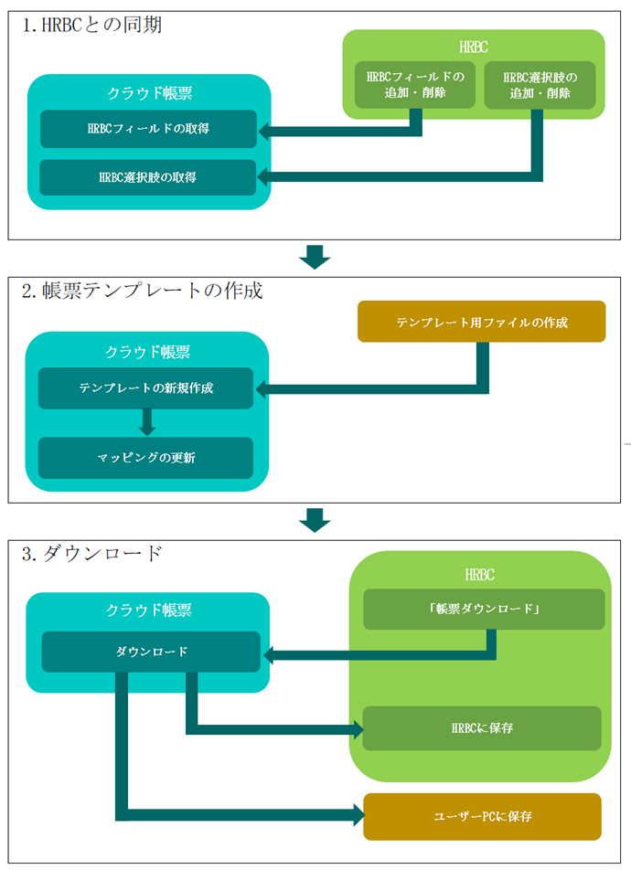
1． HRBCの同期（管理者のみ利用可能）
初回はクラウド帳票の「HRBCフィールド取得」「HRBC選択肢の取得」画面にて、HRBCの
データと紐づける項目を同期します。なお、HRBCで項目の追加・削除などの変更があった場合、
クラウド帳票側も都度同期する必要があります。
詳細は「1．HRBCとの同期」をご確認ください。
2．帳票テンプレートの作成（管理者のみ利用可能）
「帳票一覧」画面より、クラウド帳票に出力する帳票のテンプレートを新規作成します。
テンプレートを新規作成あるいは更新する場合、Excelファイルで作成したテンプレートを
取り込みます。その後、「マッピング設定」画面にて、出力項目とHRBCのデータを紐づけ
詳細は「2．帳票テンプレート用ファイルの作成」「3．帳票テンプレートの作成」
「4．マッピングの設定」をご確認ください。
3．ダウンロード（管理者/一般ユーザー共通で利用可能）
作成した帳票テンプレートをユーザーPCかHRBCにダウンロードします。
ダウンロードは、「HRBCから出力したい成約IDの画面から出力する方法」と「クラウド帳票
「6．クラウド帳票から成約IDを入力してダウンロードする」でご確認ください。
クラウド帳票のログインについて
初回の設定を行う上で、クラウド帳票の画面は一度HRBCを経由してログインする必要が
あります。
ログインの手順は「5－1.クラウド帳票を1件ダウンロードする(1)～(3)」、
「5－2.クラウド帳票を一括ダウンロードする (1)～(3)」と同様となります。
HRBCのフィールドや選択肢の変更した場合、クラウド帳票を手動で同期する必要があります。
1－1.HRBCフィールドの取得
(1) 左側の「HRBCフィールド取得」を選択します。
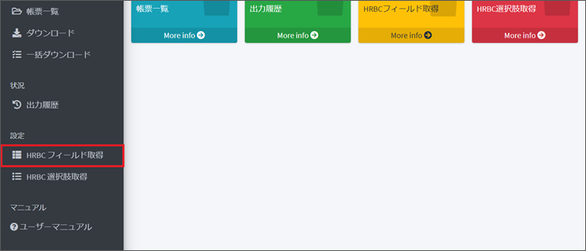
(2)「HRBCフィールド情報の取得」を押下します。
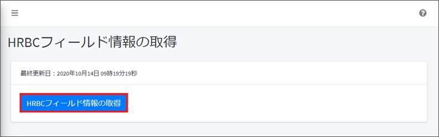
HRBCフィールドの取得が完了すると管理画面に遷移し、「HRBCフィールド情報を
更新しました。」という緑色の帯が表示されます。
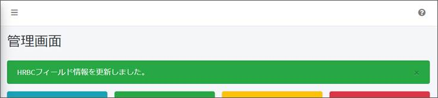
1－2. HRBC選択肢の取得
(1) 左側の「HRBC選択肢取得」を選択します。
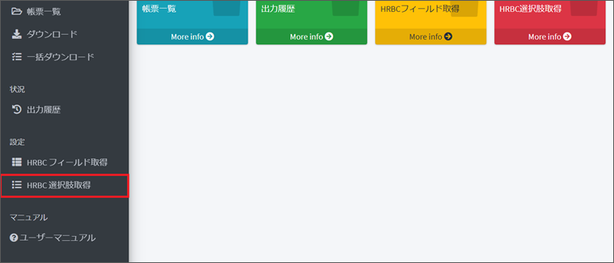
(2) 「HRBC選択肢情報の取得」を押下します。
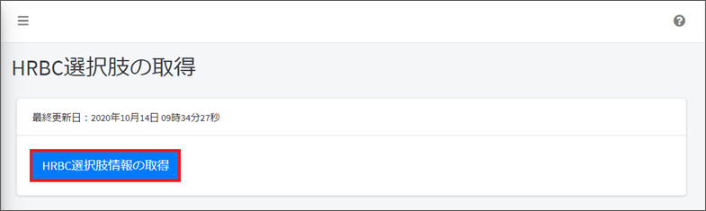
HRBCフィールドの取得が完了すると管理画面に遷移し、「HRBC選択肢情報を更新しました。」という緑色の帯が表示されます。
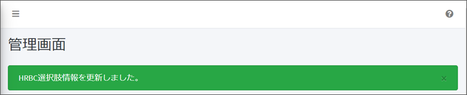
クラウド帳票のテンプレートはExcelファイルで作成したものを取り込む必要があります。
ここでは、テンプレート用ファイルの作成について記載していきます。
2－1.テンプレート用ファイルの作成
(1) Excelファイルでテンプレートファイルを作成します。このときクラウド帳票に出力したい 箇所は{{ }}で囲みます。
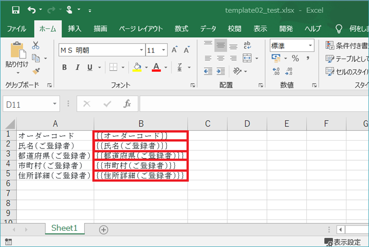
(2) 保存する際は、下記の拡張子でファイルを保存してください。
|
拡張子名 |
|
xlsx |
|
xlsm |
|
xltx |
|
xltm |
|
xlam |
|
xlw |
3．帳票テンプレートの作成
「2. 帳票テンプレート用ファイルの作成」で作成したファイルを取り込みます。
ファイルを取り込むことで、クラウド帳票に出力したい項目を抽出することができます。
3－1. テンプレートの新規作成
(1) 「帳票一覧」を選択し、「＋新規登録」を押下します。
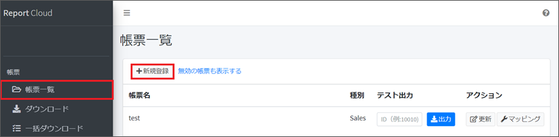
(2) 「タイトル」欄に帳票名を入力、「リソース」欄にHRBCリソースを選択し、「保存する」を押下します。
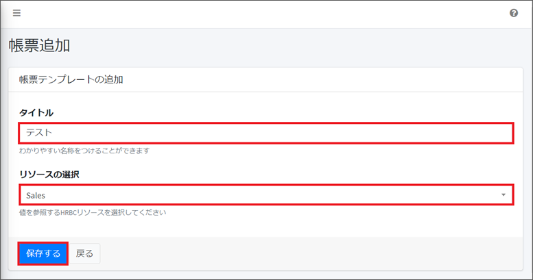
(3) 「テンプレート」欄の「ファイルをアップロードしてください」または「Browse」を
押下します。
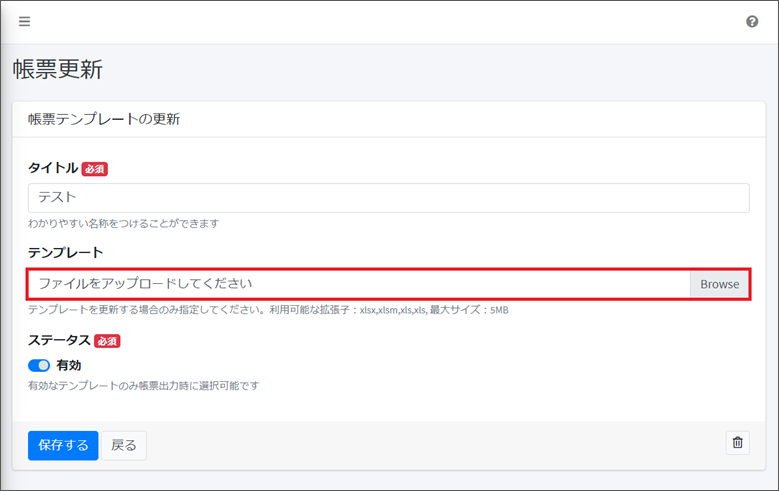
(4) 表示されるエクスプローラーの中からファイルを選択し、アップロードします。
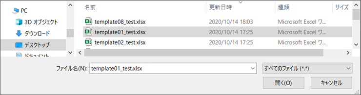
(5)「保存する」を押下すると帳票一覧に追加されます。
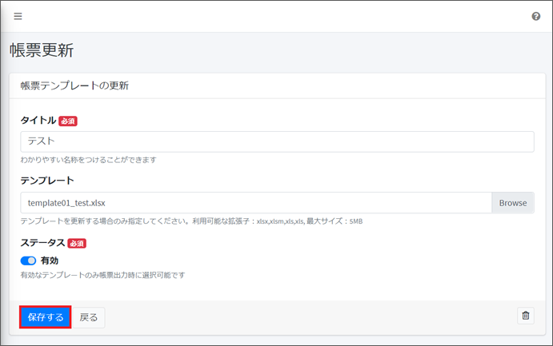
テンプレートが作成されると帳票一覧に遷移し、「更新しました」という緑色の帯が
表示され、帳票一覧に作成したテンプレートが表示されます。
出力したい項目が正しく抽出されたかを確認する場合、「帳票一覧」を選択し、
右側の「アクション」にある「マッピング」を押下してご確認ください。
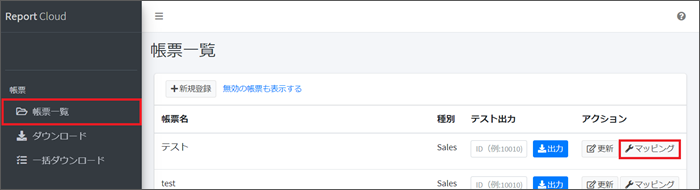
注意事項 ：「帳票更新」画面の「ステータス」欄の「有効」をOFFにした場合
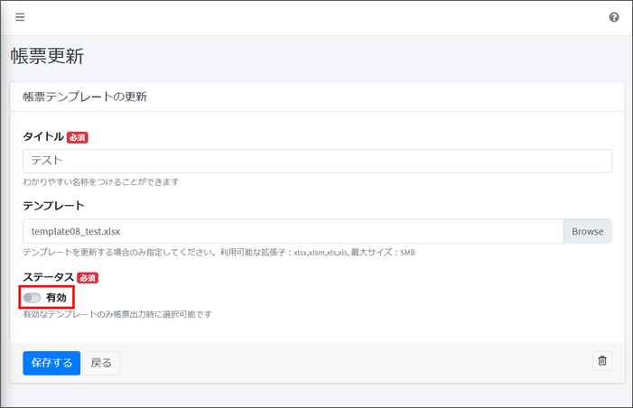
「帳票更新」画面の「ステータス」欄の「有効」をOFFにした場合、「帳票一覧」に表示
されなくなります。「無効の帳票も表示する」を選択することで表示されます。
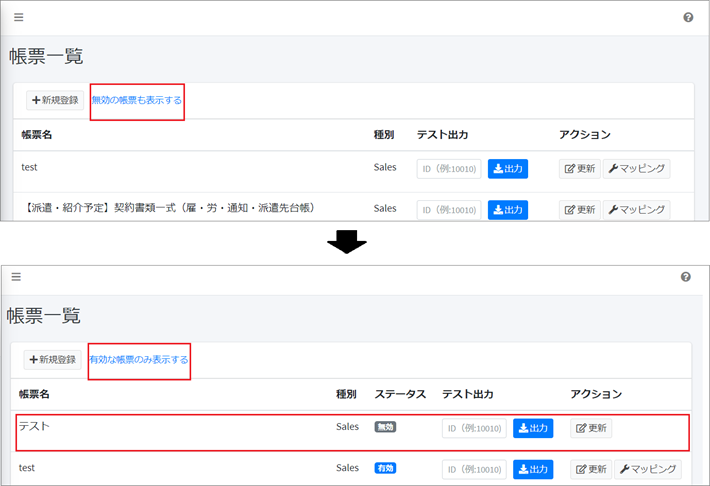
またマッピングが必要な場合、「無効の帳票も表示する」を選択し「3－2. テンプレートの更新」
にて「ステータス」の「有効」をONに変更する必要があります。
3－2. テンプレートの更新
(1) 「帳票一覧」を選択し、右側の「アクション」にある「更新」を押下します。
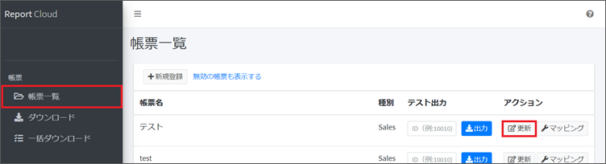
(2) 「テンプレート」欄の「ファイルをアップロードしてください」または「Browse」を
押下します。
(3) 表示されるエクスプローラーの中からファイルを選択し、アップロードします。
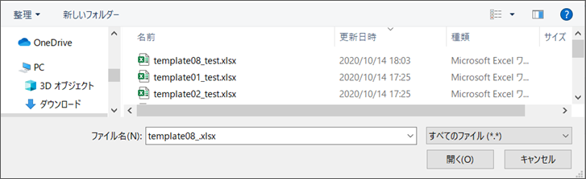
(4)「保存する」を押下すると「帳票一覧」に追加されます。
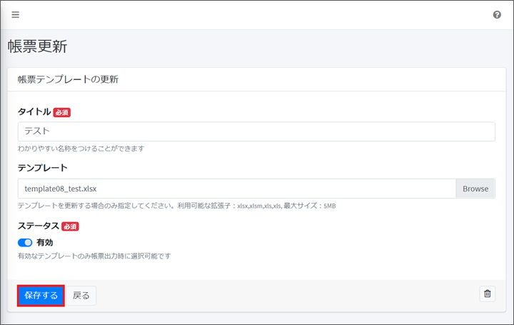
テンプレートが作成されると「帳票一覧」に遷移し、「更新しました」という緑色の帯が
表示され、作成したテンプレートが表示されます。
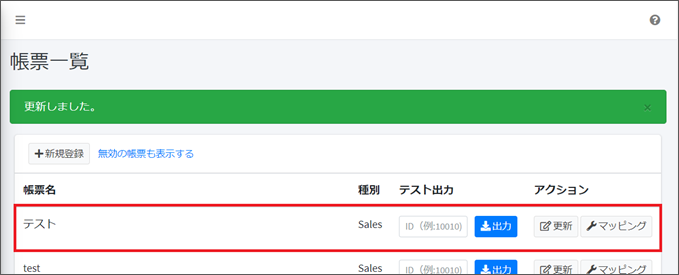
ここでは「3．テンプレート用ファイルの取り込み」で取り込んだ出力用の項目を、HRBCデータに紐づけを行います。
4－1.マッピングの更新
(1) 「帳票一覧」を選択し、右側の「アクション」にある「マッピング」を押下します。
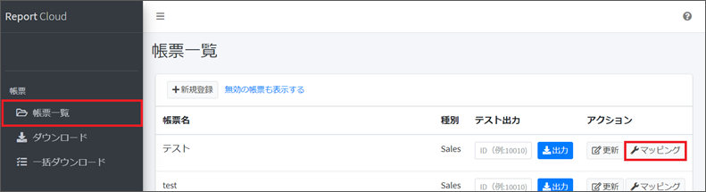
(2) 「マッピング設定」に遷移するので、右側の「アクション」にある「更新」アイコンを
押下します。
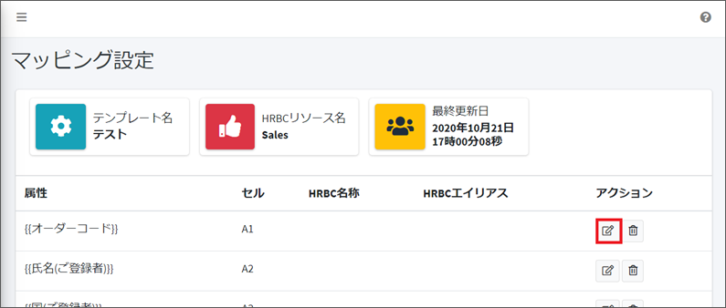
(3) 「HRBCフィールド」欄からHRBCに紐づける項目を選択します。
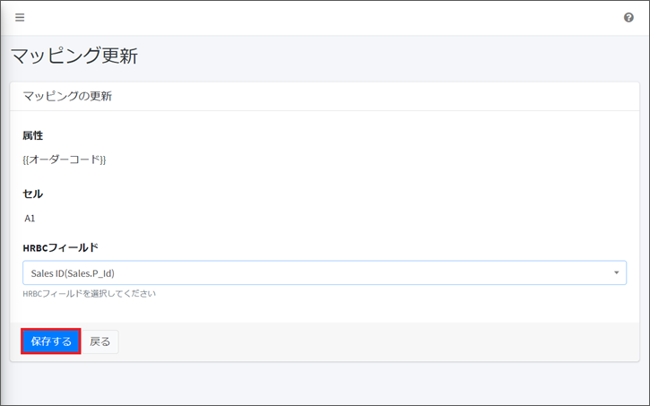
(4) 「保存する」を押下します。
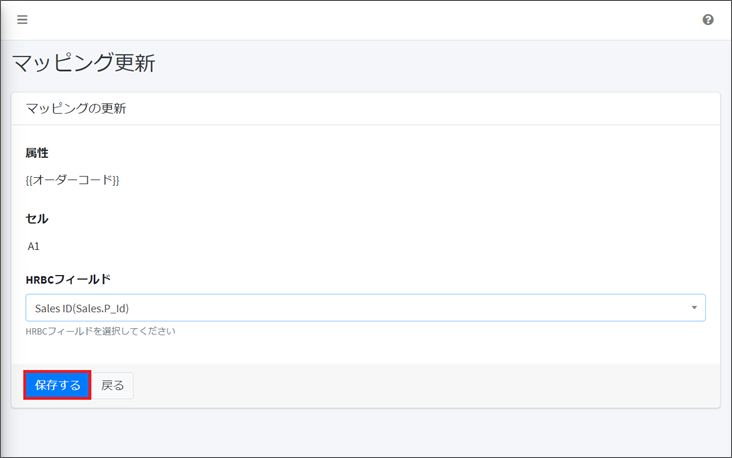
更新が完了すると「マッピング設定」に遷移し、「マッピング情報を更新しました。」という
緑色の帯が表示され、「HRBC名称」と「HRBCエイリアス」が反映されます。
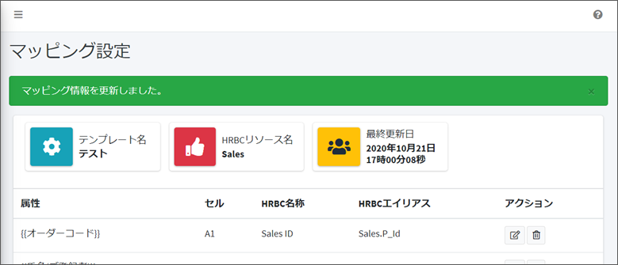
4－2.マッピングの削除
(1) 「帳票一覧」を選択し、右側の「アクション」にある「マッピング」を押下します。
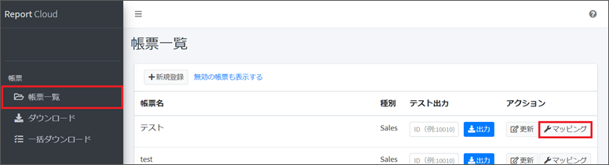
(2) 「マッピング設定」に遷移するので、削除したい行右側の「アクション」にある「削除」
アイコンを押下します。
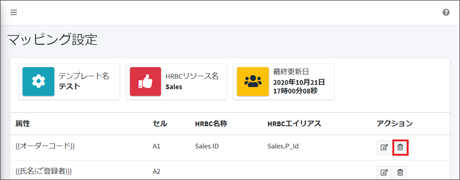
(3) 選択ウィンドウで「削除する」を押下します。
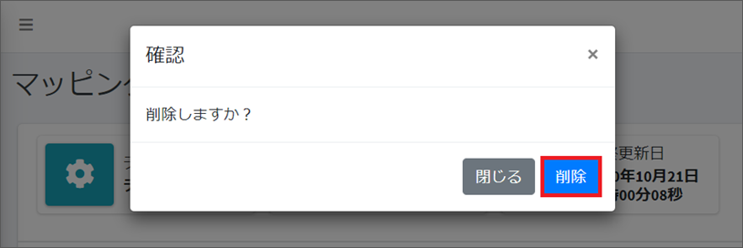
削除が完了すると「マッピング設定」に遷移し、指定した行が削除されております。

5．HRBCからクラウド帳票をダウンロードする
5－1.クラウド帳票を1件ダウンロードする
(1) HRBC画面左上のタブで「成約」を選択し、ドロップダウンから「すべての成約」を
選択すると成約一覧が表示されます。
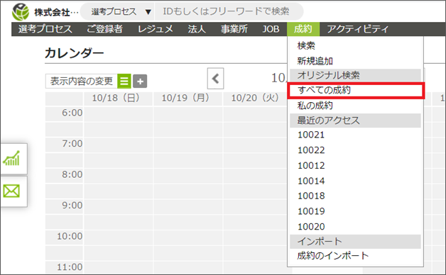
(2) クラウド帳票を作成したいHRBCデータのIDをクリックします。
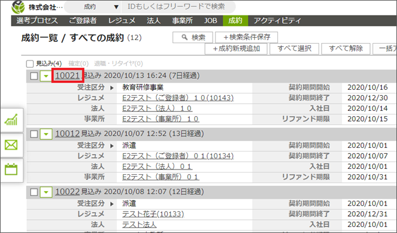
(3) 左上のタブで「帳票をダウンロードする」を選択し、ダウンロード画面に切り替えます。
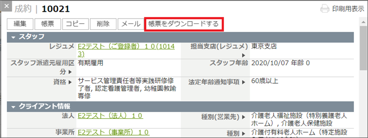
(4) ダウンロード画面のSales ID欄に表示されているIDが正しいことを確認し、
テンプレートのドロップダウンから利用したいテンプレート名称を選択します。
(5)「ダウンロードする」ボタンを押下すると、帳票ダウンロード画面に切り替わります。

① アクション＝「ダウンロードする」の場合
(1)「ダウンロードする」の右側にあるEXCEL/PDFのボタンを押下します。
(2) 画面左下に表示されるブラウザのダウンロードバーをクリックするとダウンロード
したEXCEL/PDFファイルが確認できます。
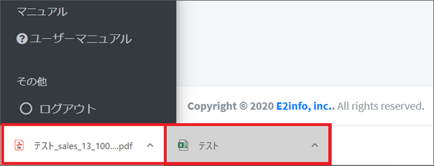
(3) PCのダウンロードフォルダにEXCEL/PDFファイルが保存されます。
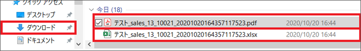

▲ Excelで出力したファイル

▲ PDFで出力したファイル
②アクション＝ 「HRBCに保存する」の場合
(1)「HRBCに保存する」の右側にあるEXCEL/PDFのボタンを押下します。
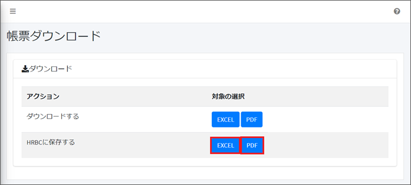
(2) 上部に「HRBCにファイルを添付しました。」という緑色の帯が表示されたら
「HRBCを開く」をクリックします。
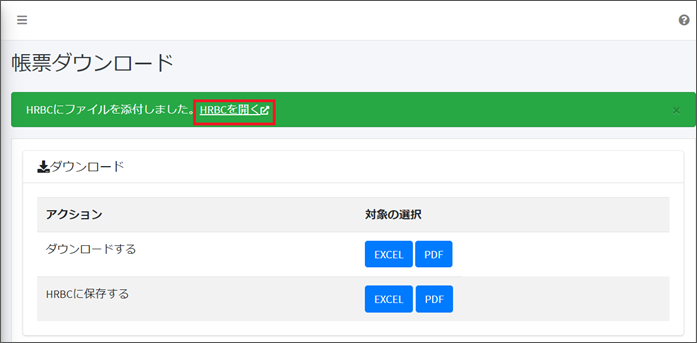
(3) HRBC画面に切り替わり、「成約」ウィンドウが表示されます。
「サブリスト｜ 添付ファイル」でダウンロードしたEXCEL/PDFファイルが
確認できます。
5－2.クラウド帳票を一括ダウンロードする
(1) HRBC画面左上のタブで「成約」を選択し、ドロップダウンから「すべての成約」を選択すると成約一覧が表示されます。
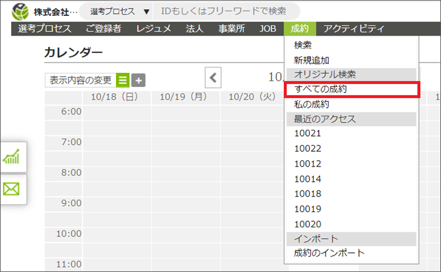
(2) 「成約一覧」 右上の「一括アクション」のドロップダウンから「帳票を一括ダウンロード
する」を選択します。
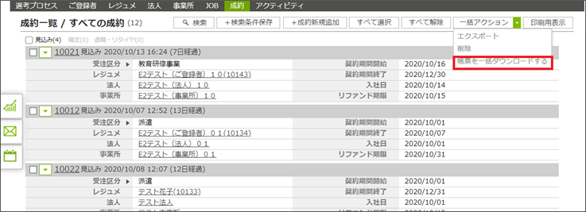
※すべてのデータではなく、選択したデータのみのクラウド帳票を出したい場合は
(3) データの選択ウィンドウで「OK」を押下すると一括ダウンロード画面に切り替わります。
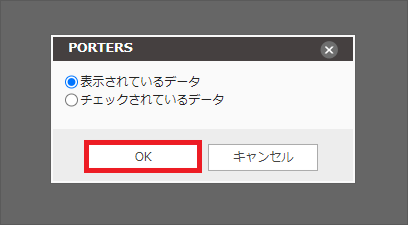
※すべてのデータではなく、選択したデータのみのクラウド帳票を出したい場合は
ラジオボタンを「チェックされているデータ」に変更してから「OK」を押下します。）
(4) Sales ID欄に表示されているIDが正しいことを確認し、
テンプレートのドロップダウンから利用したいテンプレート名称を選択します。

(5) 「ダウンロードする」ボタンを押下すると、一括ダウンロード出力画面に切り替わります。
(6) 出力したいデータのファイル欄にある「ダウンロードする」を押下すると、
「一括ダウンロード出力」画面に切り替わります。
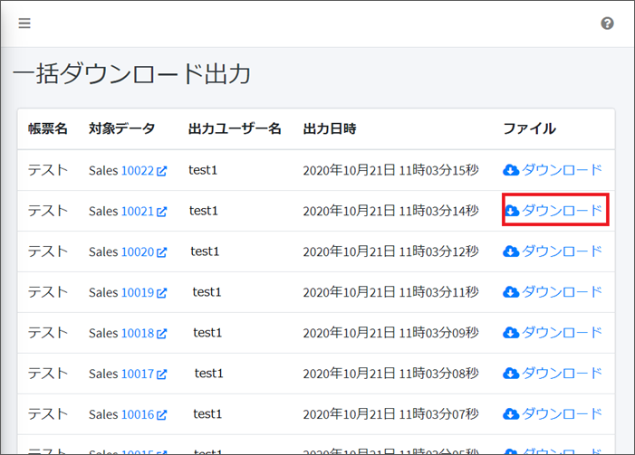
① アクション＝「ダウンロードする」の場合
(1)「ダウンロードする」の右側にあるEXCEL/PDFのボタンを押下します。
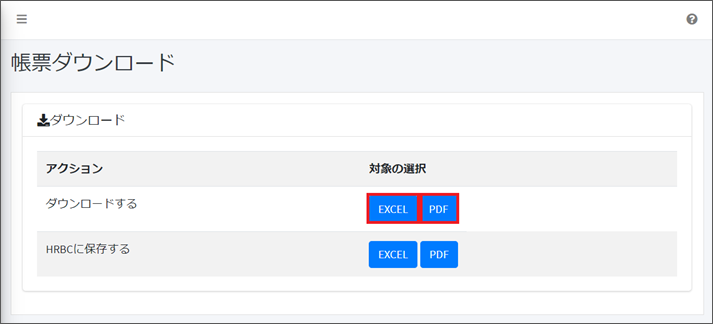
(2) 画面左下に表示されるブラウザのダウンロードバーをクリックするとダウンロード
したEXCEL/PDFファイルが確認できます。
(3) PCのダウンロードフォルダにEXCEL/PDFファイルが保存されます。
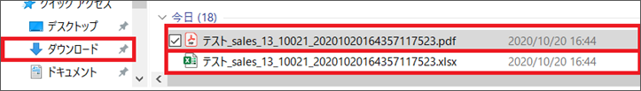
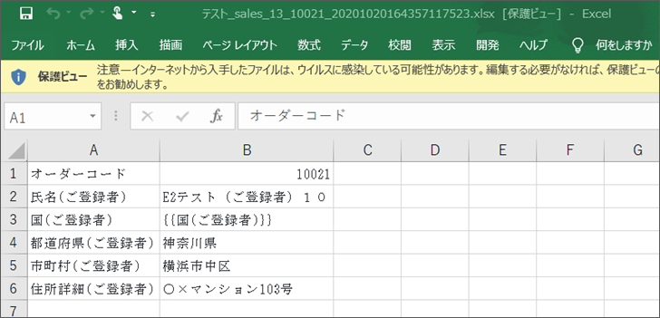
▲ Excelで出力したファイル
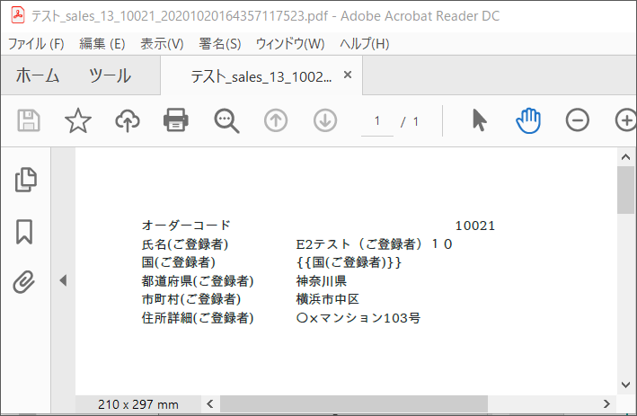
▲ PDFで出力したファイル
②アクション＝ 「HRBCに保存する」の場合
(1)「HRBCに保存する」の右側にあるEXCEL/PDFのボタンを押下します。
(2) 上部に「HRBCにファイルを添付しました。」という緑色の帯が表示されたら
「HRBCを開く」をクリックします。
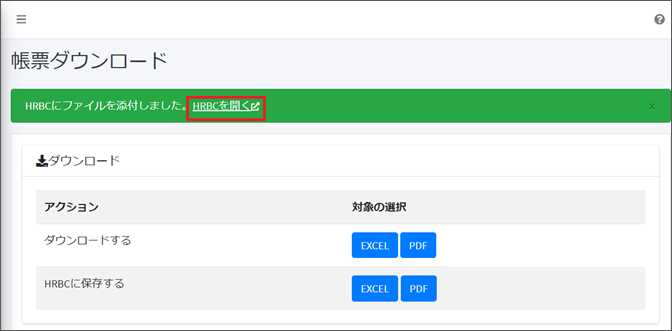
(3) HRBC画面に切り替わり、「成約」ウィンドウが表示されます。
「サブリスト｜ 添付ファイル」でダウンロードしたEXCEL/PDFファイルが確認できます。
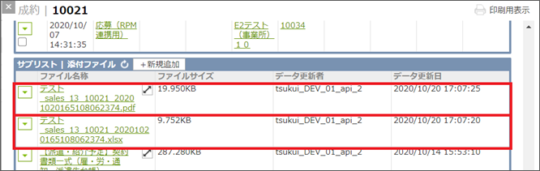
6－1.「帳票一覧」からクラウド帳票を出力する
(1) 「帳票一覧」を選択し、「テスト出力」欄に成約IDを入力します。
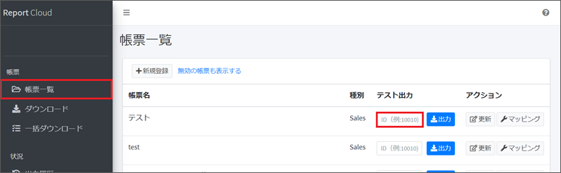
(2) 「出力」を押下すると、帳票ダウンロード画面に切り替わります。」
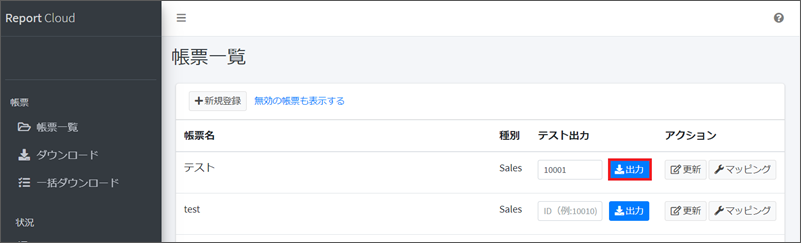
(3) 以降の操作は「5－1.クラウド帳票を1件ダウンロードする(4)」をご参照ください。
6－2.「ダウンロード」からクラウド帳票を出力する
(1)「ダウンロード」を選択し、Sales ID欄に成約IDを入力します。
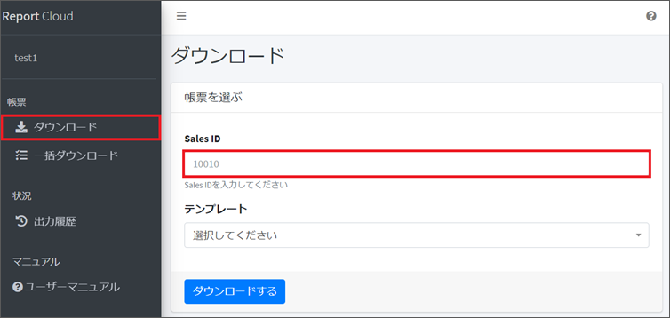
(2) 以降の操作は「5－1.クラウド帳票を1件ダウンロードする(4)」をご参照ください。
6－3.「一括ダウンロード」からクラウド帳票を出力する
(1)「一括ダウンロード」を選択し、Sales ID欄に成約IDを入力します。
複数入力する場合、成約IDの間に「,(カンマ)」で区切ります。
(2) 以降の操作は「5－2.クラウド帳票を一括ダウンロードする(4)」をご参照ください。
6－4.「出力履歴」からクラウド帳票を出力する
「出力履歴」では、過去に出力したクラウド帳票の履歴を確認し、再出力できます。
(1)「出力履歴」を選択し、右側の「対象データ」にあるIDを押下します。
(2) 別ウィンドウでHRBCの「成約一覧」が表示されます。
左上のタブで「帳票をダウンロードする」を選択し、ダウンロード画面に切り替えます。
(3) 以降の操作は「5－1.クラウド帳票を1件ダウンロードする(4)」をご参照ください。
株式会社イーツー・インフォ
2020/10/26更新
以上